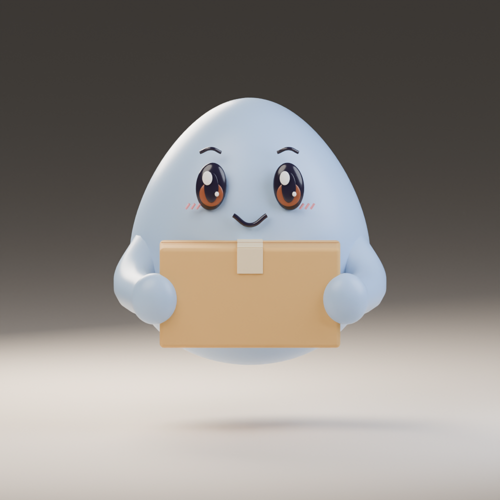
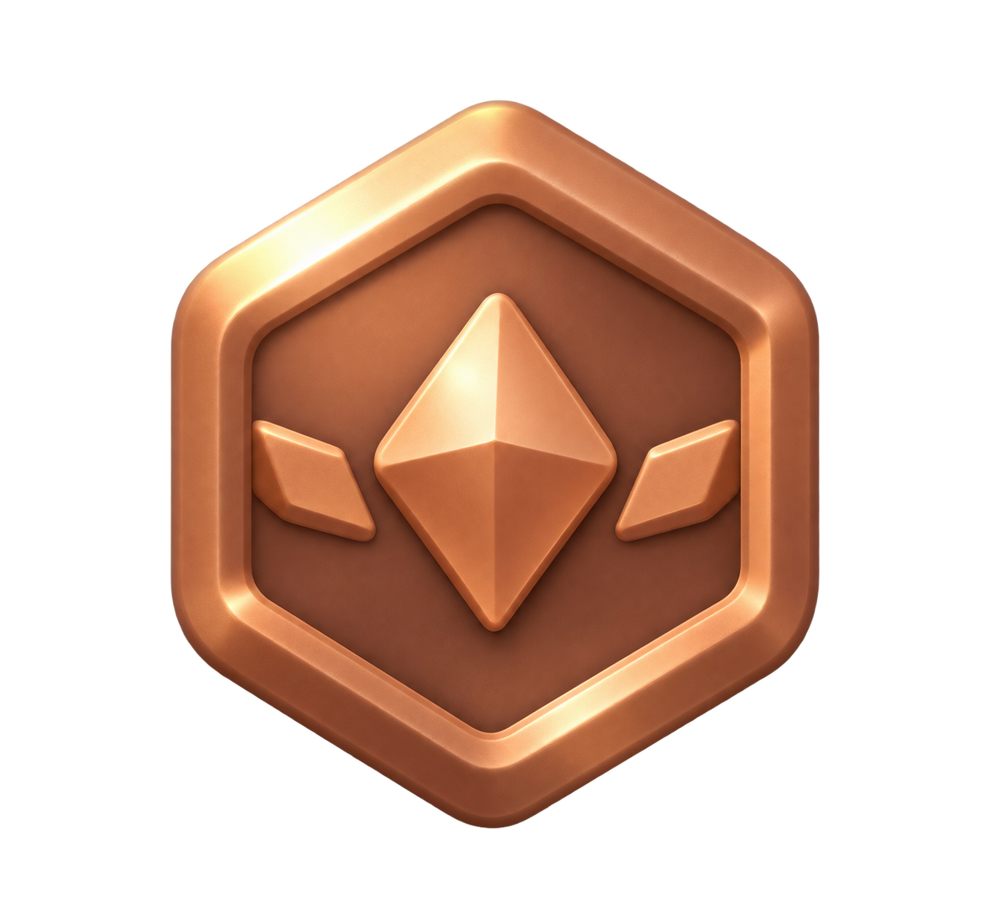
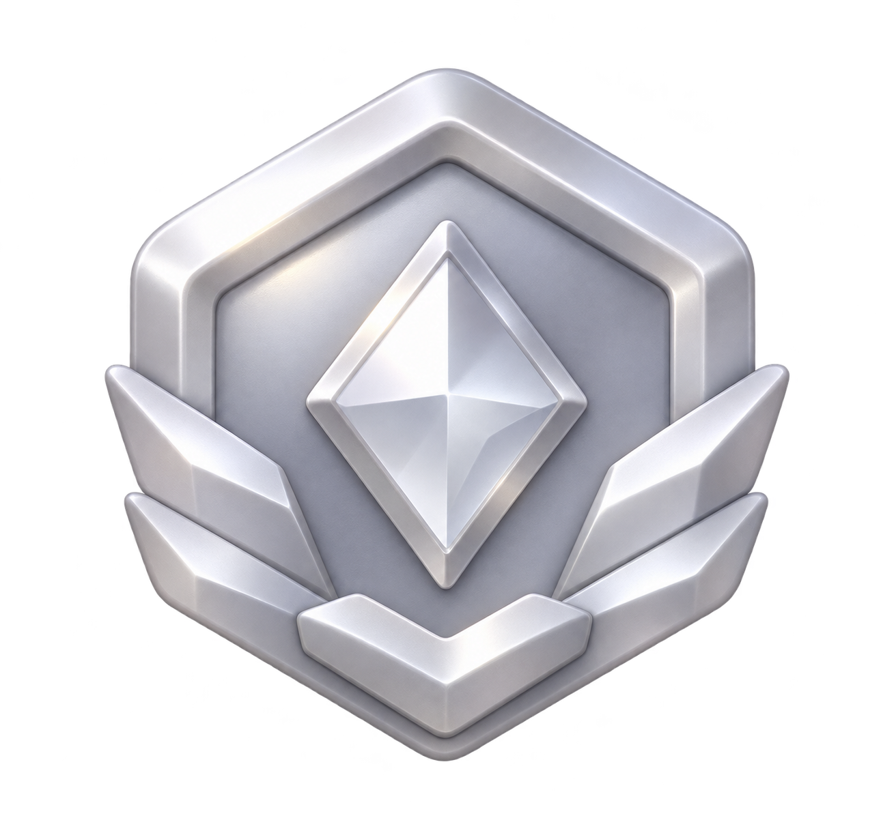
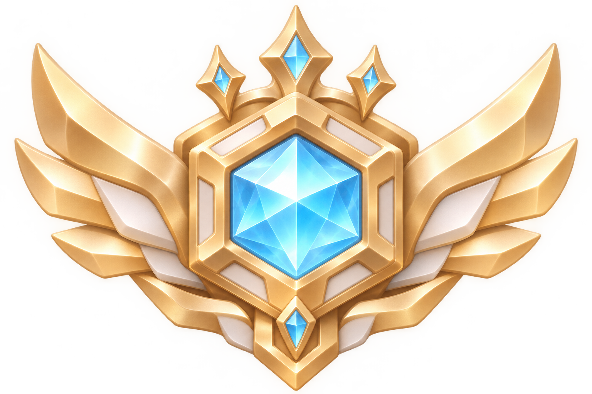

23 screen specimens. “Existing” describes the source flow; “Approved path” describes reviewed navigation. “Concept” marks content still to be designed. Every refreshed screen is for review.
Sort Lab
Fictional examples · No account or scores saved
04 / Motion & personality
Small movements. Clear feedback.
Approved character direction and badge concepts, plus replayable interface transitions.
Approved avatar · Blender v3
Blue buddy, facing forward.
The approved blue, front-facing version based on your character reference. Includes Idle, Thinking, Correct and Incorrect animation sequences.
Use this version as the implementation reference. The editable Blender model and animated GLB are saved with the library.
Visual direction approved · The model remains a prototype with object animation, not a finished skeletal rig.

Your climb, one rank at a time
Approved badge direction · Iron → Bronze → Silver → Gold → Challenger
Iron

Bronze

SilverGold

Challenger
Original character reference & review scope
The catalog presents refreshed visual specimens of existing flows and approved navigation. Concept screens remain labeled. This preview does not change the running app.
Motion pauses when this tab is hidden. Your device’s reduced-motion setting selects still poses automatically. No brand name or logo is used in this design.